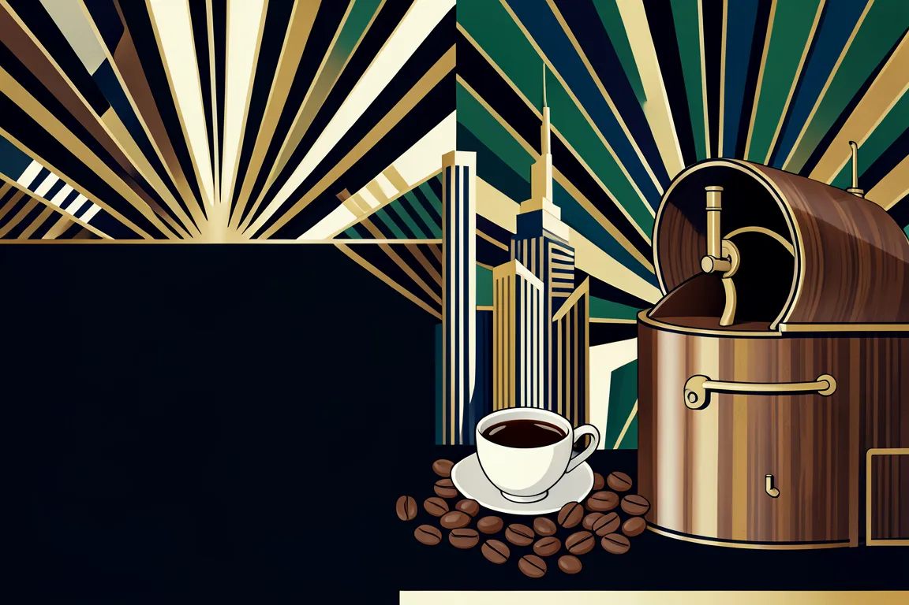

graphic movement · 1925–1939 · also: Style Moderne, Jazz Age style, Gatsby style
Symmetric geometry, stepped forms, fan and sunburst motifs and gold lines on a dark ground. It came out of the 1925 Paris exposition and stands for luxury and speed.

Core thesis
Luxury is order: the machine age gives ornament a strict, symmetric geometry that looks rich and modern at once.
Design principles
Compose every layout on a central axis: mirror the left and right halves to within 8px.
Draw ornament from arcs, fans, chevrons and stepped steps; build each motif on a 15° or 45° angle.
Use gold (#C9A24B) lines of 1px to 2px on a near-black or deep green ground; gold covers 10% to 20% of the surface.
Set headlines in upper case, geometric, high-contrast capitals at 48px or larger with tracking +0.12em to +0.2em.
Frame hero and card panels with a double border: a 2px gold line, a 6px gap and a 1px gold line.
Cut the corners of panels at 45° with a 16px chamfer instead of rounding them.
Keep body text at 16px in a geometric sans with 1.6 leading, and limit it to a column of 560px.